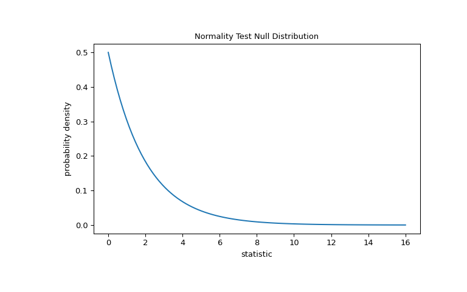
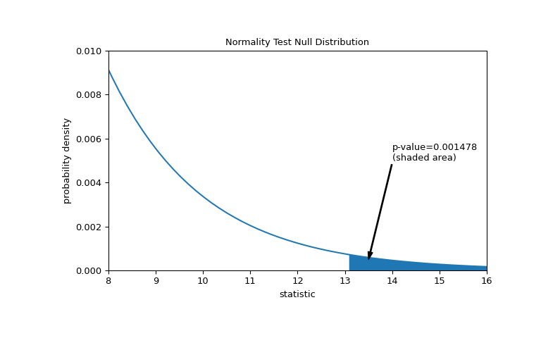
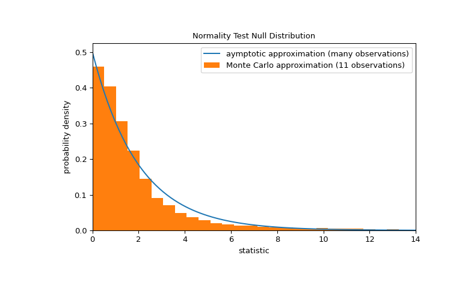

scipy.stats.normaltest#
- scipy.stats.normaltest(a, axis=0, nan_policy='propagate', *, keepdims=False)[source]#
Test whether a sample differs from a normal distribution.
This function tests the null hypothesis that a sample comes from a normal distribution. It is based on D’Agostino and Pearson’s [1], [2] test that combines skew and kurtosis to produce an omnibus test of normality.
- Parameters:
- aarray_like
The array containing the sample to be tested.
- axisint or None, default: 0
If an int, the axis of the input along which to compute the statistic. The statistic of each axis-slice (e.g. row) of the input will appear in a corresponding element of the output. If
None, the input will be raveled before computing the statistic.- nan_policy{‘propagate’, ‘omit’, ‘raise’}
Defines how to handle input NaNs.
propagate: if a NaN is present in the axis slice (e.g. row) along which the statistic is computed, the corresponding entry of the output will be NaN.omit: NaNs will be omitted when performing the calculation. If insufficient data remains in the axis slice along which the statistic is computed, the corresponding entry of the output will be NaN.raise: if a NaN is present, aValueErrorwill be raised.
- keepdimsbool, default: False
If this is set to True, the axes which are reduced are left in the result as dimensions with size one. With this option, the result will broadcast correctly against the input array.
- Returns:
- statisticfloat or array
s^2 + k^2, wheresis the z-score returned byskewtestandkis the z-score returned bykurtosistest.- pvaluefloat or array
A 2-sided chi squared probability for the hypothesis test.
Notes
Beginning in SciPy 1.9,
np.matrixinputs (not recommended for new code) are converted tonp.ndarraybefore the calculation is performed. In this case, the output will be a scalar ornp.ndarrayof appropriate shape rather than a 2Dnp.matrix. Similarly, while masked elements of masked arrays are ignored, the output will be a scalar ornp.ndarrayrather than a masked array withmask=False.References
[1] (1,2)D’Agostino, R. B. (1971), “An omnibus test of normality for moderate and large sample size”, Biometrika, 58, 341-348
[2] (1,2)D’Agostino, R. and Pearson, E. S. (1973), “Tests for departure from normality”, Biometrika, 60, 613-622
[3]Shapiro, S. S., & Wilk, M. B. (1965). An analysis of variance test for normality (complete samples). Biometrika, 52(3/4), 591-611.
[4]B. Phipson and G. K. Smyth. “Permutation P-values Should Never Be Zero: Calculating Exact P-values When Permutations Are Randomly Drawn.” Statistical Applications in Genetics and Molecular Biology 9.1 (2010).
[5]Panagiotakos, D. B. (2008). The value of p-value in biomedical research. The open cardiovascular medicine journal, 2, 97.
Examples
Suppose we wish to infer from measurements whether the weights of adult human males in a medical study are not normally distributed [3]. The weights (lbs) are recorded in the array
xbelow.>>> import numpy as np >>> x = np.array([148, 154, 158, 160, 161, 162, 166, 170, 182, 195, 236])
The normality test of [1] and [2] begins by computing a statistic based on the sample skewness and kurtosis.
>>> from scipy import stats >>> res = stats.normaltest(x) >>> res.statistic 13.034263121192582
(The test warns that our sample has too few observations to perform the test. We’ll return to this at the end of the example.) Because the normal distribution has zero skewness and zero (“excess” or “Fisher”) kurtosis, the value of this statistic tends to be low for samples drawn from a normal distribution.
The test is performed by comparing the observed value of the statistic against the null distribution: the distribution of statistic values derived under the null hypothesis that the weights were drawn from a normal distribution. For this normality test, the null distribution for very large samples is the chi-squared distribution with two degrees of freedom.
>>> import matplotlib.pyplot as plt >>> dist = stats.chi2(df=2) >>> stat_vals = np.linspace(0, 16, 100) >>> pdf = dist.pdf(stat_vals) >>> fig, ax = plt.subplots(figsize=(8, 5)) >>> def plot(ax): # we'll reuse this ... ax.plot(stat_vals, pdf) ... ax.set_title("Normality Test Null Distribution") ... ax.set_xlabel("statistic") ... ax.set_ylabel("probability density") >>> plot(ax) >>> plt.show()

The comparison is quantified by the p-value: the proportion of values in the null distribution greater than or equal to the observed value of the statistic.
>>> fig, ax = plt.subplots(figsize=(8, 5)) >>> plot(ax) >>> pvalue = dist.sf(res.statistic) >>> annotation = (f'p-value={pvalue:.6f}\n(shaded area)') >>> props = dict(facecolor='black', width=1, headwidth=5, headlength=8) >>> _ = ax.annotate(annotation, (13.5, 5e-4), (14, 5e-3), arrowprops=props) >>> i = stat_vals >= res.statistic # index more extreme statistic values >>> ax.fill_between(stat_vals[i], y1=0, y2=pdf[i]) >>> ax.set_xlim(8, 16) >>> ax.set_ylim(0, 0.01) >>> plt.show()

>>> res.pvalue 0.0014779023013100172
If the p-value is “small” - that is, if there is a low probability of sampling data from a normally distributed population that produces such an extreme value of the statistic - this may be taken as evidence against the null hypothesis in favor of the alternative: the weights were not drawn from a normal distribution. Note that:
The inverse is not true; that is, the test is not used to provide evidence for the null hypothesis.
The threshold for values that will be considered “small” is a choice that should be made before the data is analyzed [4] with consideration of the risks of both false positives (incorrectly rejecting the null hypothesis) and false negatives (failure to reject a false null hypothesis).
Note that the chi-squared distribution provides an asymptotic approximation of the null distribution; it is only accurate for samples with many observations. This is the reason we received a warning at the beginning of the example; our sample is quite small. In this case,
scipy.stats.monte_carlo_testmay provide a more accurate, albeit stochastic, approximation of the exact p-value.>>> def statistic(x, axis): ... # Get only the `normaltest` statistic; ignore approximate p-value ... return stats.normaltest(x, axis=axis).statistic >>> res = stats.monte_carlo_test(x, stats.norm.rvs, statistic, ... alternative='greater') >>> fig, ax = plt.subplots(figsize=(8, 5)) >>> plot(ax) >>> ax.hist(res.null_distribution, np.linspace(0, 25, 50), ... density=True) >>> ax.legend(['aymptotic approximation (many observations)', ... 'Monte Carlo approximation (11 observations)']) >>> ax.set_xlim(0, 14) >>> plt.show()

>>> res.pvalue 0.0082 # may vary
Furthermore, despite their stochastic nature, p-values computed in this way can be used to exactly control the rate of false rejections of the null hypothesis [5].